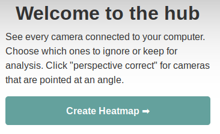

How Do I Use It?
First you will need to clone the repo, The Floor is Lava, to your computer. Make sure you have the correct modules downloaded as
specified in the README files. When launching this script, there are several steps that need to be taken.
It begins with the following..
- Install the camera in the corner of the room at the highest possible point.
- Next, we will hardwire the cameras to the main computer for future retrieval
- To begin streaming these videos and ensuring that the connections are working properly
we will open the web app. Detailed instruction on how to navigate throughout the web app are found below.


To better understand how the scripts relate with each other, a diagram below shows how the scripts work together.
Super helpful for debugging.